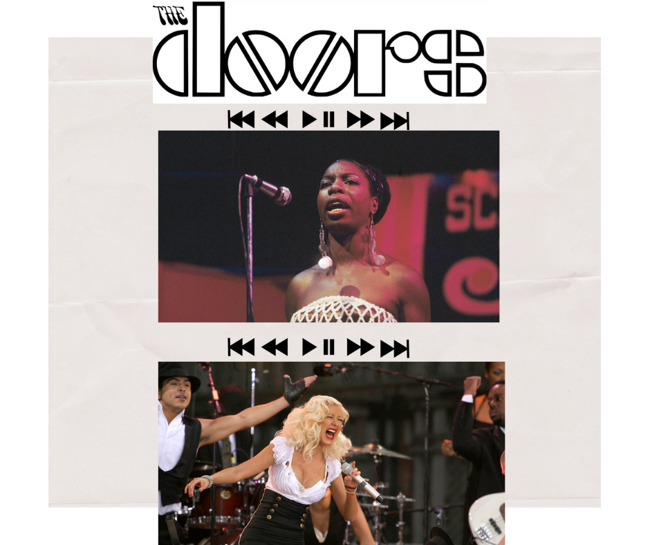

Writing
Although I find it difficult to begin a writing project, once I get started, I become hyper-focused on my wiritng task at hand. In the past, I have worked on extensive writing and research projects.
Creative and refelction-based writng are completely different than academic writing for me. I can easily dive into writing poetry or simply jotting down my thoughts. During the quarantine, creative writng has served as a bridge to the outside and to the world I hope to see one day.
Music
Currently, my favorite artists to listen to are Princess Nokia, Dayglow, Noname, Jessie Reyez, and Drake. However, my all time favorite artists are Nina Simone, Christina Aguilera, Lauryn Hill, and The Doors.
From a young age, my family taught me the value behind music. As a result, music has become essential in my life. I can listen to any type of music. Most people will completely close off to certain genres of music, but I don't. From hip-hop to country to musicals, barriers or boundaries should not exist within music.
To me, music produces so much more than a feeling. Music is also tied to our very history and to various different culutures. Something so important and transendent should not be relegated to having labels placed on it.
Fashion
Wardrobe design and shopping have helped me present myself to the world and to my own self. I always thought of clothing that way. However, because of the pandemic, I am unable to go thrift shopping or to present myself to the world in general. Therefore, I have transitioned from focusing on the clothing I wear to focusing on the fashion that shapes the way that people dress. In the last couple of months, I have come away with a different perspective of fashion, as it has the power to shift and mold the way we see culture. Here are some of my current favorite looks: